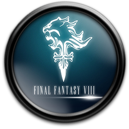

FINAL FANTASY VIII GUIA COMPLETA
Introduccion
Bienvenidos a nuestra guía de Final Fantasy VIII. En ella volveremos a llevaros de la mano por toda la historia de Squall y el resto de amigos en su lucha por salvar el mundo. La típica lucha de toda la vida en un juego de rol, sí. Pero en esta ocasión hay grandes poderes implicados, y no será una batalla sencilla...
Guía de la historia, paso a paso, para conseguir el 100% de la historia del juego. Cómo se consiguen todos los GF, jefes ocultos, consejos para ir avanzando, consejos generales... todo a tu alcance y, como siempre, tan libre de spoilers como sea posible.
Nota: la vida de algunos enemigos puede variar dependiendo del nivel de los personajes. Los que aparecen en esta guía son meramente indicativos.
